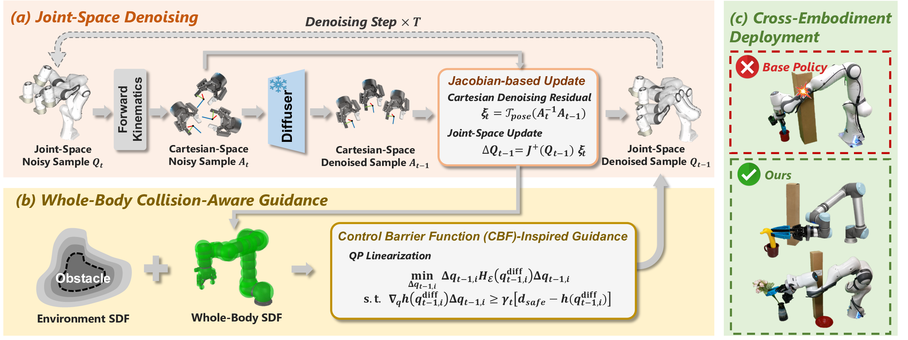

UR5
Base Cartesian Policy
EmbodiSteer
Steering Embodiment-Agnostic Visuomotor Policies with Joint-Space Guidance for Zero-Shot Cross-Embodiment Deployment
Department of Automation, Tsinghua University | Beijing Key Laboratory of Embodied Intelligence Systems | Institute for Embodied Intelligence and Robotics, Tsinghua University
*Equal contribution. †Corresponding authors.
Overview Video
Sound on
Abstract
Scalable robot imitation learning relies on large-scale heterogeneous data from diverse robots or body-free data, making Cartesian end-effector actions a key interface for embodiment-agnostic policy learning. However, end-effector-only abstraction leaves Cartesian policies unaware of the deployed robot body, making them brittle under robot-specific constraints such as whole-body collision avoidance. To overcome this limitation, we present EmbodiSteer, a training-free framework that steers embodiment-agnostic visuomotor policies toward zero-shot, embodiment-aware deployment. EmbodiSteer keeps policy learning in Cartesian space while efficiently lifting inference-time diffusion sampling into the target robot's joint space via forward kinematics and Jacobian-based updates. With whole-body collision-aware guidance over joint trajectories after each denoising step, the arm can be steered away from collisions while preserving learned end-effector behavior. Compared with Cartesian-only execution, EmbodiSteer reduces collision rate by 46.1% and improves task success rate by 28.5% across 9 simulated robots, and further achieves 90.0% collision rate reduction and 36.7% success rate increase on two physical robots in highly constrained scenarios.
+28.5%
simulation success rate
-46.1%
simulation collision rate
+36.7%
real-world success rate
-90.0%
real-world collision rate

Real-World Results
Same UMI-trained checkpoint, zero-shot deployment on two robot embodiments
Compare Base Cartesian Policy and EmbodiSteer rollouts on UR5 and Franka Panda. Each task shares one checkpoint across the two robots.
All rollouts are shown at 2x speed.
Make Iced Coffee
Obstacle layout
UR5
EmbodiSteer
Franka Panda
Base Cartesian Policy
Franka Panda
EmbodiSteer
Put Flower in Vase
Obstacle layout
UR5
Base Cartesian Policy
UR5
EmbodiSteer
Franka Panda
Base Cartesian Policy
Franka Panda
EmbodiSteer
Arrange Banana
Obstacle layout
UR5
Base Cartesian Policy
UR5
EmbodiSteer
Franka Panda
Base Cartesian Policy
Franka Panda
EmbodiSteer
Simulation Results
Evaluation across 9 robot embodiments

Quantitative results in simulation across 9 robot embodiments
TSR denotes task success rate, and COR denotes collision rate.
| Obstacles | Method | PlaceToast | TurnOnFaucet | MakeCoffee | Average | ||||||||
|---|---|---|---|---|---|---|---|---|---|---|---|---|---|
| TSR ↑ | RWD ↑ | COR ↓ | TSR ↑ | RWD ↑ | COR ↓ | TSR ↑ | RWD ↑ | COR ↓ | TSR ↑ | RWD ↑ | COR ↓ | ||
| w/o Obs. | EE | 96.8 | .980 | -- | 83.6 | .937 | -- | 89.7 | .932 | -- | 90.0 | .950 | -- |
| Joint | 94.4 | .965 | -- | 87.9 | .957 | -- | 89.7 | .929 | -- | 90.7 | .950 | -- | |
| w/ Obs. | EE | 43.4 | .634 | 52.6 | 41.6 | .752 | 61.8 | 22.2 | .456 | 58.3 | 35.7 | .614 | 57.6 |
| EE w/ Sampling | 47.1 | .661 | 51.3 | 43.9 | .767 | 53.2 | 24.1 | .478 | 60.0 | 38.4 | .635 | 54.8 | |
| EE w/ CBF | 65.8 | .764 | 15.3 | 56.3 | .797 | 29.9 | 48.9 | .606 | 8.6 | 57.0 | .722 | 17.9 | |
| Joint w/ CG | 57.7 | .687 | 0.2 | 10.3 | .403 | 52.0 | 22.4 | .424 | 40.6 | 30.1 | .505 | 30.9 | |
| EmbodiSteer | 74.8 | .829 | 4.6 | 60.6 | .833 | 27.1 | 57.2 | .670 | 2.8 | 64.2 | .777 | 11.5 | |
Method
Lift Cartesian denoising into joint space

Frozen Cartesian policy
The learned denoiser remains in the embodiment-agnostic end-effector action space.
Joint-space sampling
Forward kinematics and damped Jacobian updates lift the reverse-diffusion sample into the target robot's joints.
Whole-body guidance
CBF-inspired QP guidance steers robot-body motion away from known obstacles while preserving end-effector behavior.
Citation
BibTeX
@misc{wang2026embodisteer
title={EmbodiSteer: Steering Embodiment-Agnostic Visuomotor Policies with Joint-Space Guidance for Zero-Shot Cross-Embodiment Deployment},
author={Wang, Shihefeng and Lv, Kangchen and Yu, Mingrui and Li, Xiang},
year={2026},
eprint={2606.12965},
archivePrefix={arXiv},
primaryClass={cs.RO},
url={https://arxiv.org/abs/2606.12965},
}